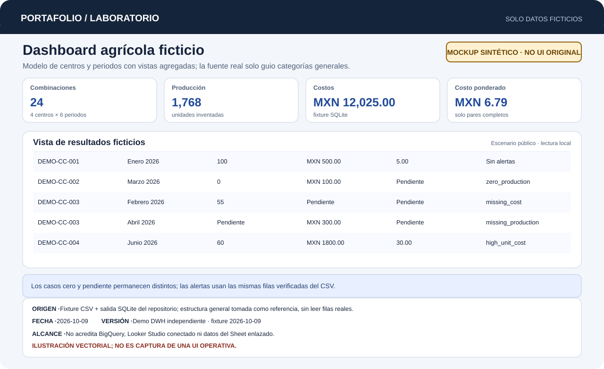

PROYECTO DESTACADO · ANÁLISIS DE DATOS Y AUTOMATIZACIÓN
Data Warehouse Agrícola y Analítica de Rendimiento Operativo
Flujo sintético reproducible para 4 centros y 6 periodos; 24 combinaciones, filtros, tendencias y alertas a partir de la misma salida SQL verificada.
Problema operativo
Organizar registros de trabajo, fletes y catálogos distribuidos para consulta analítica y costos unitarios sin duplicar importes.
Solución técnica
Módulos GAS de consolidación y validación sobre Sheets. Modelo SQL sintético pedagógico en SQLite con agregación previa al cruce.
Tecnologías observadas
- Google Apps Script
- Google Sheets
- Looker Studio
- SQL / SQLite
Ejemplo reproducible
Entrada: Cuatro centros y seis periodos con producción y costos sintéticos; incluye cero y faltantes.
Resultado: 1,768 unidades, MXN 12,025.00 de costo y MXN 6.79 por unidad ponderada.
Decisión técnica: Agregar cada fuente antes de relacionarlas por centro y periodo evita multiplicar importes; conservar cero y faltante como estados distintos.
Evidencia verificable
Fixture CSV y SQLite: 1,768 unidades, MXN 12,025.00 y MXN 6.79 por unidad ponderada. Cero, faltantes, duplicados, reimportación y paridad CSV/dashboard verificados.

Alcance, límites y próximos pasos
La fuente enlazada se usó solo como referencia estructural general; no se leyeron ni copiaron filas, nombres de pestañas, IDs o valores. Mockup y dashboard no acreditan BigQuery, Looker Studio conectado ni la interfaz operativa.
No se atribuyen métricas cuantitativas no medidas ni autoría exclusiva de componentes no acreditados. El repositorio documenta la aportación verificada y sus límites.
Comprobación reproducible: python examples/verify.py
Ver repositorio y documentación técnica (abre en otra pestaña) ↗
Leer caso de estudio completo en GitHub (abre en otra pestaña) ↗